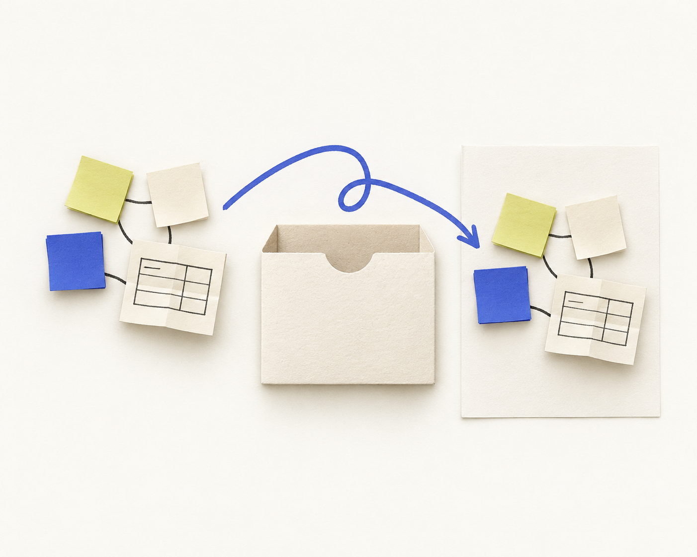
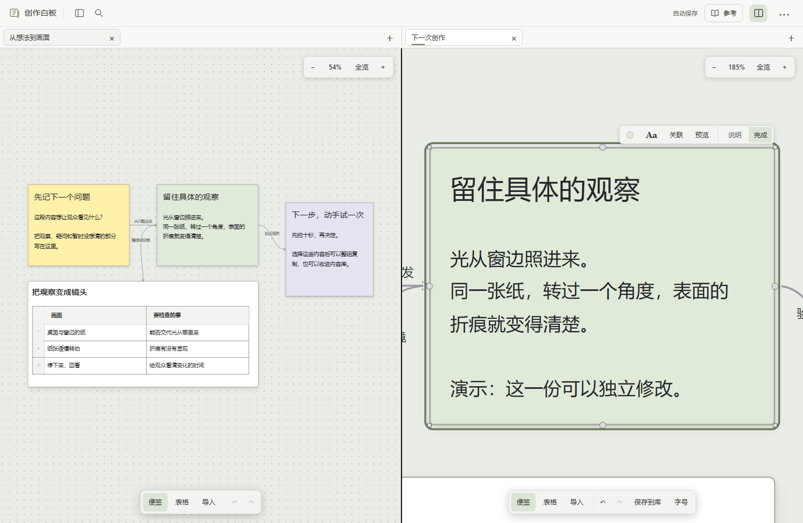
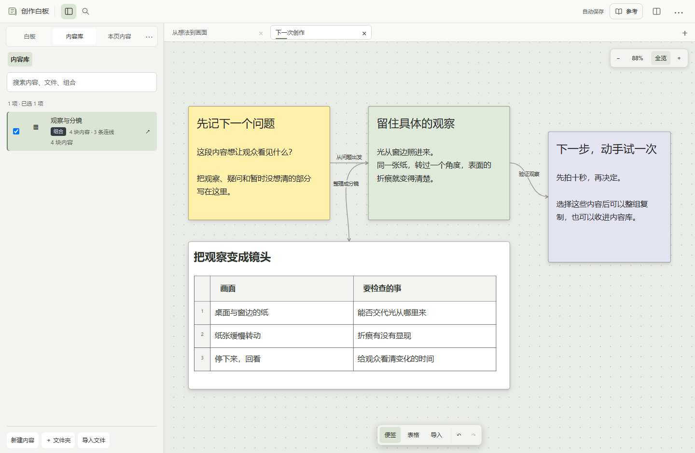

创作白板笔记与资料整理工具
01 / 04
留下这一组
这一组，下次接着用。
便签、表格和连线存成一组。
换张白板，取出副本继续。

纸面概念示意
把整理好的内容，
留给下一次创作。
01 / 04
留下这一组
便签、表格和连线存成一组。
换张白板，取出副本继续。

纸面概念示意
把整理好的内容，
留给下一次创作。
02 / 04
看着原资料，继续写
打开「左右分栏」，两张白板并排看。

真实界面 · 演示示例｜右边的修改不会自动覆盖原件。
03 / 04
把一组内容放进下一张白板
便签、表格和内部连线，一起带过来。

真实界面 · 演示示例｜库中原件与新白板上的独立副本
改的是新副本，库中原件保留。
04 / 04
开始用自己的白板
下载本机版，在自己的电脑上写。

第一张
便签
纸面概念示意
01下载并解压
02在项目文件夹运行python server.py
03在浏览器打开http://127.0.0.1:18746/
需要 Python 3.10+ · Chrome / Edge本机版无需账号 · 使用时保留启动窗口
便签、表格和连线，存成一组。
在新白板取出副本，继续创作。
原创纸面概念示意 · 真实操作见下文